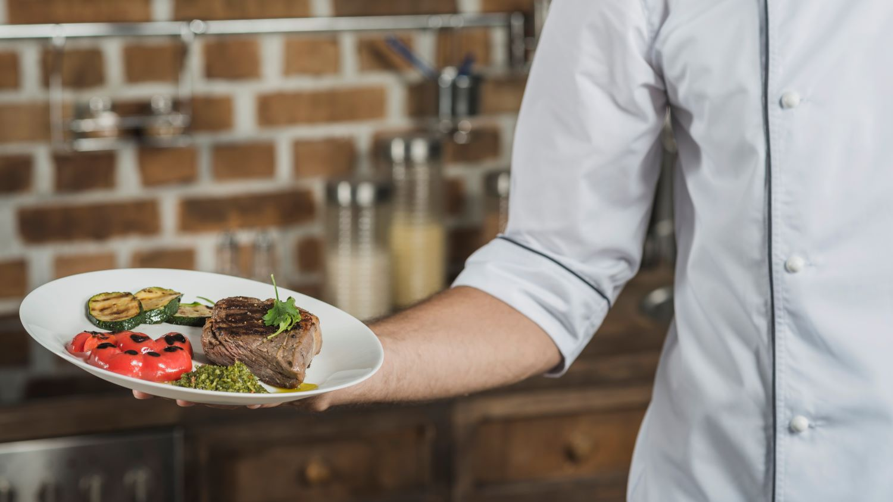

Los preparativos para el concurso de cocina MASTERFOOD 2024 ya han empezado
Publicado el 22 de Abril de 2024 por Cristian Nikelsen
Estamos emocionados de anunciar que los preparativos para el Concurso de Cocina 2024 están en pleno apogeo. Este año, el evento se llevará a cabo en un nuevo lugar espectacular y contará con la participación de chefs de todo el mundo.
El concurso ofrecerá una variedad de desafíos culinarios, desde platos clásicos hasta creaciones innovadoras. Los participantes competirán en diversas categorías, incluyendo cocina italiana, asiática, francesa, mexicana, mediterránea y latinoamericana.
Además de la competición, habrá demostraciones en vivo, degustaciones de comida y oportunidades para conocer a chefs famosos. ¡Es un evento que no te puedes perder!
La cocina es un arte que une culturas y emociones.
- Chef Estrella Michelin
El concurso también contará con jueces expertos en gastronomía, quienes evaluarán cada plato con criterio y precisión. Los ganadores recibirán premios increíbles y reconocimiento internacional.
Los premios para el concurso incluyen:
Primer premio: Una beca para una pasantía en un restaurante de renombre.
Segundo premio: Un juego completo de cuchillos de chef de alta calidad.
Tercer premio: Una cena exclusiva con un chef estrella Michelin.
El ganador de la edición anterior, triunfando en Europa
En la edición anterior, el plato ganador fue preparado por el chef Julian Anders. Este plato, llamado "Bohemian Rhapsody", es una deliciosa combinación de pimiento, pepino, carne de ternera y especias cuidadosamente seleccionadas, que lo convierten en una experiencia culinaria única y memorable.
La victoria de Julian Anders en varios concursos de cocina a nivel nacional, ha catapultado su trayectoria hasta convertirse en uno de los chef de más renombre a nivel Europeo.

Plato ganador de MASTERFOOD 2023, a cargo del chef Julian Anders